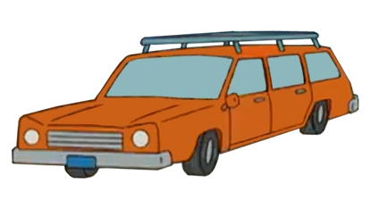

Homer Simpson

Brief Biography
I am just a fat, unintelligent guy who works in a nuclear power plant eating donuts all day. What do you expect? I am just a dad of 3 children, those being Bart, Lisa, and Maggie. Bart is well, interesting to say the least, hes somewhat of a troublemaker and often get mad at him for his actions. I also having my loving wife, Marge, who supports me through all my struggles and makes me feel better about myself. Below is a video of the certain times where I actually was intelligent:
In conclusion, I am just a fat dad with a crayon in his brain doing dumb actions. Here is a table of my favourite things in different categories:
| Food | Drink | Furniture | Resturants |
|---|---|---|---|
| Donut | Duff | Sofa | Moe's |
| Burger | I think ice cream is a drink | Bed | All you can eat buffet |
| Potato Chips | I think coffee | Vibrating chair | Krusty Burger |
That is all I would like to talk about me, the guy named Mr. Burns... D'OH!
Marge Simpson

Brief Biography
I am just a hard working mom that stays at home, I support Homer through his struggles, but more often or not, I may get frustrated about a certain situation and get mad, I have two sisters who are well, not aren't really like me. I also forgot to mention I have tall hair which is obvious if you look at me for a second. My job is just to take care of the children in the house and thats all I do. I have had my own adventures such as being in plays, but not much besides that. I also have a car which is one of the two vehicles our family has. This concludes a brief introduction about me as a mother of 3 children.
Picture of My Car, an Orange Station Wagon:
Bart Simpson

Brief Biography
I am just a kid who always finds a way to prank anybody, I know I get detention, but I don't care, I still do it anyway, my hobbies are skateboarding, pranking people, and thats about it. I once worked for the mafia in Springfield doing various tasks such as being a bartender. They say I have a future of trouble, but I will just see how my life rolls out, who knows? Maybe I could be a taste tester in the future! I would like to conclude this by saying two words, ay caramba! Below is a picture of me on my skateboard:
Lisa Simpson

Brief Biography
I am just the smart one in the family, I have a passion of playing the saxophone. I am just a nerdy person always striving for perfect grades at school. A simple person with simple passions, hobbies, and life. Well, that concludes my brief biography and I'll be going to my room now.
Picture of My Saxophone:

Maggie Simpson

Brief Biography
*Pacifier Noises*